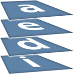

AEDI
Web-oriented information system ordered by the student assoc., to manage their various services.
Website computerizing the main services of the AEDI (events registration, professional contact book, job offers listing, ...) and offering a new modern façade.
As (now former) secretary-general of the AEDI and front-end lead-programmer, I participated in the specification process, before implementing the dynamic contact book, the static pages design, and finally handing it over to the client.